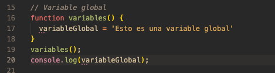
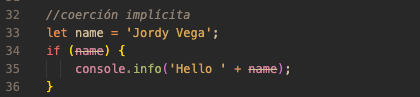
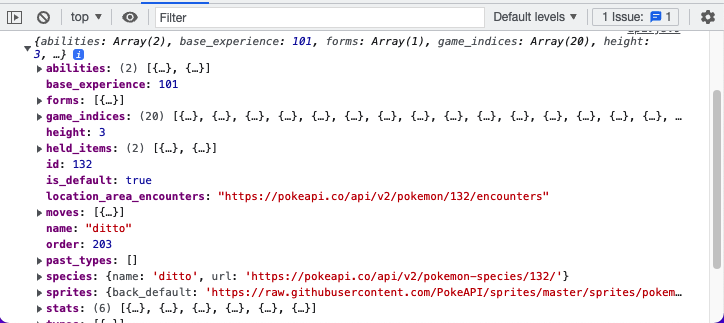

Examen final

Jordy Alexander Vega Aldana 1190-18-9769
Serie I. (10 pts. resuelva las preguntas con sus propias palabras)
Serie II. (10 pts./ desarrolle lo que se le pide a continuación)

El scope puede definirse como el alcance que una variable tendrá en tu código. En otras palabras, el scope decide a qué variables tienes acceso en cada parte del código. Existen dos tipos de scope, el scope global y el scope local. A continuación te mostraré un par de ejemplos explicando en qué consiste cada uno de ellos.
Sin Scope
Con Scope

La conversión a boolean ocurre cada vez que se requiere un booleano en algún punto del script. Un ejemplo de esta conversión puede ocurrir en las sentencias de desición.
coercioﾌ］ impliﾌ…ita
ApiRest
Nos permite no asignarle a un nombre un conjunto de instrucciones que deseemos ejecutarlo sin necesidad de asociarlo.
Funcion anonima

Serie III. (15 pts./ desarrolle lo que se le pide a continuación).
Link repositorio github
Repositorio Githubindex.js

config.js

jordy.js
Base de datos